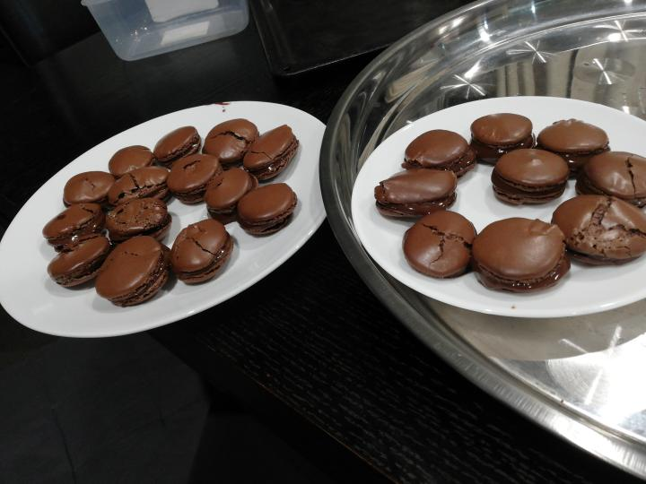

Macarons!

Ingredients for 25 macarons:
For macaron shells:
- 125g powdered sugar
- 50g powdered almonds
- 25g unsweetened cocoa powder
- 2 large egg whites (66g), at room temperature
- 2g salt
- 75g granulated sugar
For chocolate ganache filling:
- 120g heavy cream
- 120g bitter sweet chocolate, finely chopped
- 14g unsalted butter, optional
- 1 tsp instant coffee, optional
Steps:
- Preheat oven to 180ºC.
- Line two baking sheets with parchment paper and have a pastry bag with a plain tip (about 1/2-inch, 12 mm) ready.
- Grind together the powdered sugar with the almond powder and cocoa so there are no lumps; use a blender or food processor. Then sift the mixture into a large bowl and discard the larger lumps.
- Using a mixer beat the egg whites until they begin to rise and hold their shape. While whipping, beat in the granulated sugar until very stiff and firm, about 2 minutes.
- Fold the dry ingredients, in two batches, into the beaten egg whites with a rubber spatula. When the mixture is smooth and there are no streaks of egg white, stop folding and scrape the batter into the pastry bag. (standing the bag in a tall glass helps if you are alone).
- Pipe the batter on the parchment-lined baking sheets in 1-inch (2.5 cm) circles evenly spaced one-inch (2.5cm) apart.
- Rap the baking sheet a few times firmly on the counter top to flatten the macarons, and remove air bubbles. Allow the macarons to sit for 20 to 30 minutes until a “skin” forms and they are no longer wet when lightly touched.
- Bake them for 10-15 minutes. Let cool completely then remove from baking sheet.
- To make the chocolate ganache filling: in a small saucepan heat the cream and instant coffee if used. When the cream just begins to boil at the edges, remove from heat and pour over the chopped chocolate. Let sit one minute, then stir until smooth. Stir in the butter. Let cool completely before using.
- Spread a bit of batter on the inside of the macarons then sandwich them together.
- Let them stand at least one day before serving, to meld the flavors. Serve macarons at room temperature.
Recipe taken from here